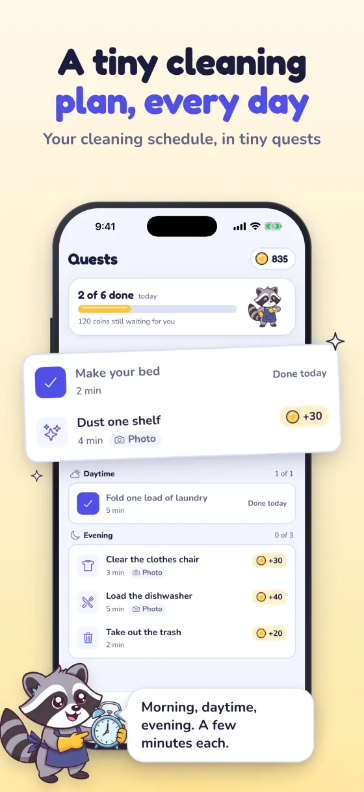

A daily cleaning routine that takes 15 to 20 minutes
A good daily cleaning routine is a few small chores tied to moments you already have: make the bed in the morning (about 2 minutes), wash the dishes and wipe the counter after meals (about 5 minutes), and do a 5 minute reset in the evening. Together that is about 15 to 20 minutes a day, and it keeps a home from sliding into a big weekend cleanup.
Key takeaways
- Tie each chore to something you already do every day: waking up, eating, going to bed.
- Keep tasks short. Most daily chores take 2 to 5 minutes.
- Dishes and a quick counter wipe after meals do more for a tidy home than any other daily task.
- On a bad day, do one chore only. That still counts.
- Leave deep cleaning (floors, bathroom, sheets) for a weekly schedule.
What is a good daily cleaning routine?
A good daily cleaning routine is short enough that you do it on a tired Tuesday, not only on a good Sunday. The routine below is built for one person or a couple in a small home. It covers the things that pile up fastest: the bed, dishes, clothes, clutter on surfaces and trash.
| Task | When | Minutes |
|---|---|---|
| Make the bed | Right after you get up | 2 |
| Hang up or put away yesterday's clothes | While you get dressed | 2 |
| Wipe the bathroom sink | After brushing your teeth | 1 |
| Rinse breakfast dishes or put them in the dishwasher | After breakfast | 2 |
| Wash dinner dishes and wipe the counter and stove | Right after dinner | 5 |
| Evening reset: put things back, clear one surface | Before you sit down for the night | 5 |
| Take out the trash if the bin is full | On the way out, or with the evening reset | 1 to 2 |
| Total | 18 to 19 |
If you do laundry at home, add one laundry step a day on laundry days (start a load, hang it, or fold it). Each step is about 5 minutes, and splitting it this way stops clean clothes from living on a chair.
How do I keep my house clean every day without spending hours?
Attach each chore to a moment, not to a time on the clock. "After dinner I wash the dishes" is easier to keep than "at 8 pm I clean the kitchen", because dinner happens anyway. Research on habit formation backs this up: a review in the British Journal of General Practice advises choosing a cue inside an existing daily routine and repeating the action in the same context, and reports that habits in one study took around 66 days on average to become automatic, with large differences between people. So expect the routine to feel like effort for the first weeks, and easier after that.
The same review notes that missing an occasional day did not seriously hurt habit formation. One skipped evening is not a reason to start over.
What does a 5 minute evening reset look like?
- Set a timer for 5 minutes.
- Walk through the main room with an empty basket or bag.
- Put anything that belongs in another room into the basket, then drop each thing in its room.
- Clear one surface completely: the coffee table, the desk or the kitchen table.
- Stop when the timer ends, even if you are not done.
Stopping on time matters. The reset works because it is small enough to do every night.
What is a 10 minute daily cleaning routine?
If 15 to 20 minutes is too much, keep the four tasks with the biggest effect:
- Make the bed (2 minutes).
- Wash or load the dinner dishes and wipe the counter (5 minutes).
- Clear one surface (2 minutes).
- Empty the trash if it is full (1 minute).
That is 10 minutes. The rest can wait for the weekly schedule.

What should I do on a bad day?
Use the one-chore minimum: on a low-energy or very busy day, pick one chore from the list and do only that. Making the bed or washing the dinner dishes are good picks because you see the result right away. A one-chore day keeps the habit alive, and the home is still a little better than it was in the morning.
What are common daily cleaning mistakes?
- Making the list too long. A routine of 15 tasks lasts about a week. Start with three and add one when those feel easy.
- Saving dishes for later. Dried food takes longer to clean. Washing right after the meal is faster.
- Leaving spills. The US Food and Drug Administration advises wiping up refrigerator spills immediately and laundering cloth kitchen towels often in hot water.
- Deep cleaning every day. Mopping, scrubbing the shower and changing sheets belong in a weekly cleaning schedule, not the daily list.
- Quitting after a missed day. Pick it back up the next morning with the bed.
Where Rocco fits
Rocco is an iPhone app built around this kind of routine: a small daily list of real chores that take about 2 to 5 minutes each, such as making the bed, the dishes, laundry and taking out the trash. You confirm each chore with a photo, Rocco checks the photo, and you earn coins that furnish a cozy virtual home. Rocco sends at most one gentle reminder a day and stays quiet on days your chores are already done. Rocco needs a subscription after a 7-day free trial, and the routine on this page works just as well with no app at all. See how Rocco works.
Questions people ask
How long should a daily cleaning routine take?
About 15 to 20 minutes a day is enough for most small homes, split into 2 to 5 minute tasks across the day. A 10 minute version covers the bed, the dinner dishes, one surface and the trash.
What should I clean every day?
Make the bed, wash the dishes and wipe the kitchen counter after meals, put clothes away, clear one surface and empty the trash when it is full. Floors, the bathroom and sheets can be done weekly.
What if I miss a day of my cleaning routine?
Start again the next morning with the first task. Missing an occasional day does not undo a habit, so there is no need to catch up on everything at once.
Is it better to clean every day or once a week?
A short daily routine plus a weekly session works best. Daily tasks stop clutter and dishes from piling up, and the weekly session covers deeper jobs like floors and the bathroom.
Sources
- Gardner B, Lally P, Wardle J. Making health habitual: the psychology of habit-formation and general practice. British Journal of General Practice, 2012.
- US Food and Drug Administration. Cleaning: Food Safety for Moms to Be.